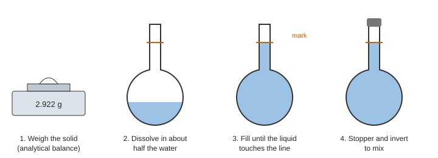

Solutions and Mixtures
A solution is a homogeneous mixture of a solute in a solvent.
Part 1 · Hook
Why this matters
Part 2 · Before you start
What this builds on
Part 3 · Prerequisite check
Quick check before you start
1. What is a homogeneous mixture?
- A mixture with the same composition throughout
- A pure substance made of one element
- A mixture with visible layers
Show the answer
Homogeneous means uniform all the way through, down to the particles.
- Correct: A mixture with the same composition throughout:
- A pure substance made of one element:
- A mixture with visible layers:
2. How many moles are in 5.844 g of NaCl (58.44 g/mol)?
- 0.1000 mol
- 10.00 mol
- 341.5 mol
Show the answer
5.844 g ÷ 58.44 g/mol = 0.1000 mol.
- Correct: 0.1000 mol:
- 10.00 mol:
- 341.5 mol:
3. How many liters are in 250.0 mL?
- 0.2500 L
- 2.500 L
- 250,000 L
Show the answer
250.0 mL × (1 L / 1000 mL) = 0.2500 L.
- Correct: 0.2500 L:
- 2.500 L:
- 250,000 L:
Part 4 · See it
See it first

Part 5 · Step by step
How it works, step by step
- A solution is a mixture, so its composition can varywe state its concentration as molarity, moles of solute per liter of solution
- Molarity depends on the final volume of solutionsolutions are made up to the mark of a volumetric flask, not by adding a volume of water
- Adding water adds no solutemoles stay the same on dilution, so M₁V₁ = M₂V₂ with V₂ the total volume
- Ionic solutes give moving ions in watertheir solutions conduct electricity: they are electrolytes
Part 6 · Key ideas
Key ideas
- M = mol solute / L solution. Convert mL to L first.
- Prepare: analytical balance, volumetric flask, dissolve, dilute to the mark, invert.
- Dilution: M₁V₁ = M₂V₂; V₂ is the total final volume.
- Electrolytes give ions in water and conduct; count each ion: 0.10 M CaCl₂ is 0.20 M Cl⁻.
Part 7 · Misconception
A common mistake
The wrong idea: To make 1.00 L of 0.200 M solution, dissolve 0.200 mol of solute in 1.00 L of water.
What actually happens: Molarity uses the volume of solution. Dissolve the solute in less water, then dilute to a total of 1.00 L in a volumetric flask.
Part 8 · Check yourself
Check yourself
Exam-style questions. Anything you miss goes into your review queue.
Experimental setup
A copper(II) sulfate stock solution
A student weighs 3.991 g of anhydrous copper(II) sulfate, CuSO₄ (159.61 g/mol), on an analytical balance, transfers it to a 250.0 mL volumetric flask, dissolves it, and dilutes to the mark. She then uses a 10.00 mL volumetric pipet to transfer 10.00 mL of this stock into a 100.0 mL volumetric flask and dilutes to the mark.
1. What is the molarity of the stock solution?
Type a number and its unit.
Show the answer
moles = 3.991 g ÷ 159.61 g/mol = 0.025005 mol. V = 250.0 mL = 0.2500 L. M = 0.025005 mol ÷ 0.2500 L = 0.100019 M, which is 0.1000 M.
- Answer: 0.1000 M
2. What is the molarity of the diluted solution?
Type a number and its unit.
Show the answer
M₂ = M₁V₁/V₂ = 0.10002 M × 10.00 mL / 100.0 mL = 0.010002 M, which is 0.01000 M.
- Answer: 0.01000 M
3. Why does the student use a volumetric flask rather than a beaker to make the stock solution?
- It holds one volume precisely, so the molarity is known to four significant figures.
- A volumetric flask dissolves the solid faster, because its narrow neck keeps the solution warm.
- A beaker would react with copper(II) sulfate, while the glass of a volumetric flask does not.
- A 250 mL beaker is too small to hold 250 mL of solution, so a larger container is needed.
Show the answer
Molarity needs the final volume of solution. A volumetric flask is accurate to about ±0.1 mL at its mark; a beaker's markings are only within about 5%.
- Correct: It holds one volume precisely, so the molarity is known to four significant figures.: Right: precision of the final volume.
- A volumetric flask dissolves the solid faster, because its narrow neck keeps the solution warm.: The neck exists to make the volume precise, not to keep heat in.
- A beaker would react with copper(II) sulfate, while the glass of a volumetric flask does not.: Both are glass; neither reacts with the solution.
- A 250 mL beaker is too small to hold 250 mL of solution, so a larger container is needed.: Beakers of 250 mL and larger are common; the issue is precision.
4. While making the stock, the student adds water until the top of the curved liquid surface, rather than the bottom, touches the mark. How does this affect the molarity she calculates for the stock?
- Her calculated value is too low, because the actual volume is smaller than 250.0 mL.
- Her calculated value is too high, because the actual volume is smaller than 250.0 mL.
- Her calculated value is too low, because the actual volume is larger than 250.0 mL.
- Her calculated value is unchanged, because the mass of solute was measured correctly.
Show the answer
Water curves up where it meets the glass, so the top of the curved surface is at the edges and the bottom is in the middle. Stopping when the edges reach the mark leaves the bottom below it, so the flask holds a little less than 250.0 mL. The same moles in less volume make the true molarity higher than the value she calculates with 250.0 mL, so her value is too low.
- Correct: Her calculated value is too low, because the actual volume is smaller than 250.0 mL.: Right: less volume, higher true concentration, so the value calculated with 250.0 mL understates it.
- Her calculated value is too high, because the actual volume is smaller than 250.0 mL.: The volume is smaller, which makes the true concentration higher; a value calculated with 250.0 mL is therefore too low, not too high.
- Her calculated value is too low, because the actual volume is larger than 250.0 mL.: Stopping at the top of the curve leaves the bottom below the mark, so the volume is smaller, not larger.
- Her calculated value is unchanged, because the mass of solute was measured correctly.: Molarity also depends on the volume, which is wrong here.
5. What volume of 12.0 M HCl stock is needed to prepare 250. mL of 0.600 M HCl?
Type a number and its unit.
Show the answer
V₁ = M₂V₂/M₁ = (0.600 M × 250. mL) / 12.0 M = 12.5 mL of stock, diluted to a total of 250. mL.
- Answer: 12.5 mL
6. What is the molarity of chloride ions in a solution made by dissolving 0.0450 mol of CaCl₂ in water to a total volume of 0.300 L?
Type a number and its unit.
Show the answer
M(CaCl₂) = 0.0450 mol / 0.300 L = 0.150 M. Each CaCl₂ gives two Cl⁻ ions, so [Cl⁻] = 2 × 0.150 M = 0.300 M.
- Answer: 0.300 M
7. A student dissolves 0.200 mol of NaOH in 1.00 L of water and labels the result "0.200 M NaOH." Why is the label not exactly right?
- Molarity uses the final volume of solution, which is not exactly 1.00 L.
- Molarity is grams of solute per liter, so the moles have to be converted to grams.
- The label is exactly right, because the solvent volume is what molarity is based on.
- The NaOH should have been weighed in milliliters, so the moles are not known exactly.
Show the answer
Dissolving a solute changes the volume, so 1.00 L of water plus NaOH is not exactly 1.00 L of solution. The right method dissolves the solid and dilutes to 1.00 L in a volumetric flask.
- Correct: Molarity uses the final volume of solution, which is not exactly 1.00 L.: Right: liters of solution, not of solvent.
- Molarity is grams of solute per liter, so the moles have to be converted to grams.: Molarity is moles per liter.
- The label is exactly right, because the solvent volume is what molarity is based on.: Molarity is based on the solution's volume.
- The NaOH should have been weighed in milliliters, so the moles are not known exactly.: Solids are weighed in grams; the moles are fine.
Part 9 · Summary
Summary
Part 10 · Up next
What comes next
Part 11 · Connections